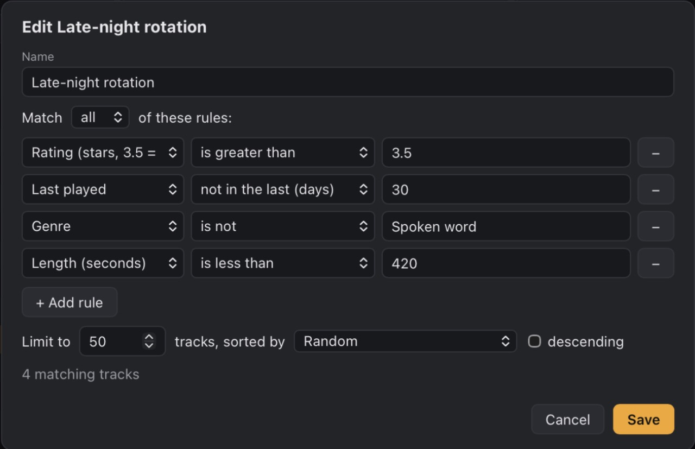
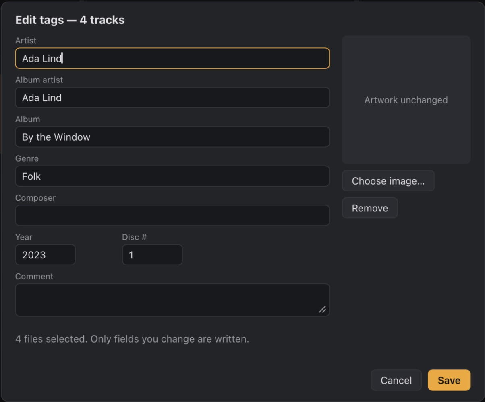
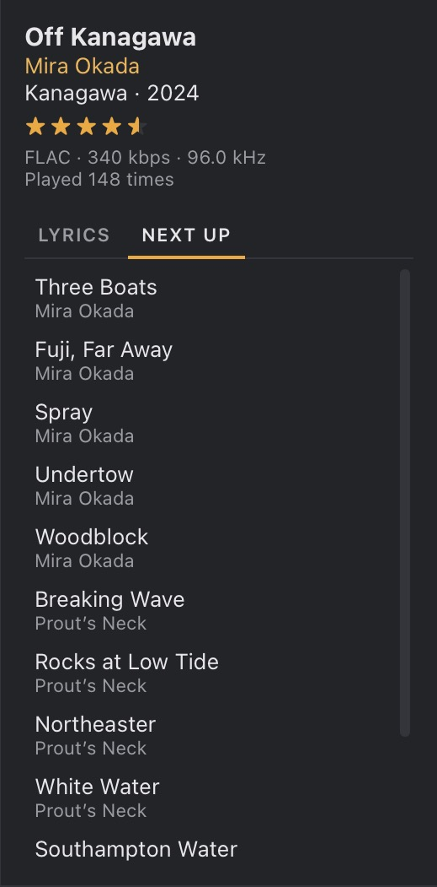
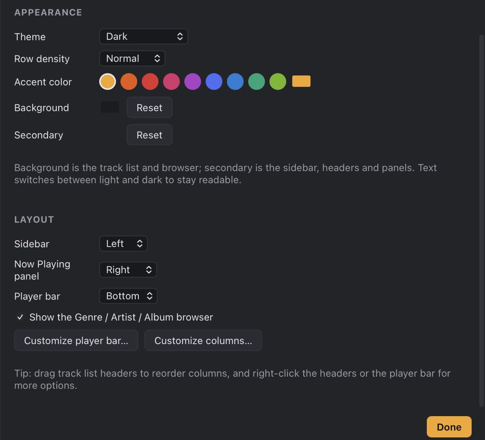
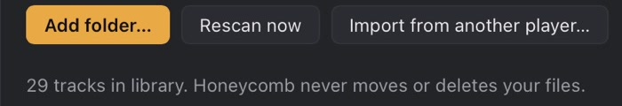
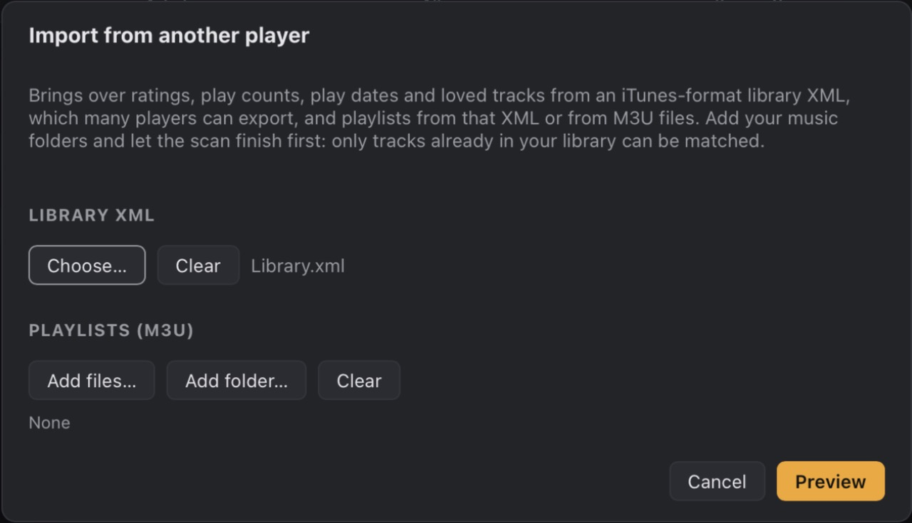
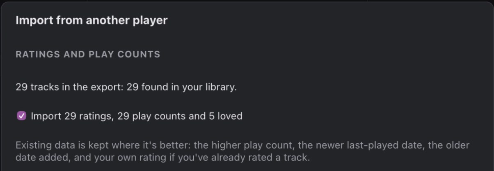
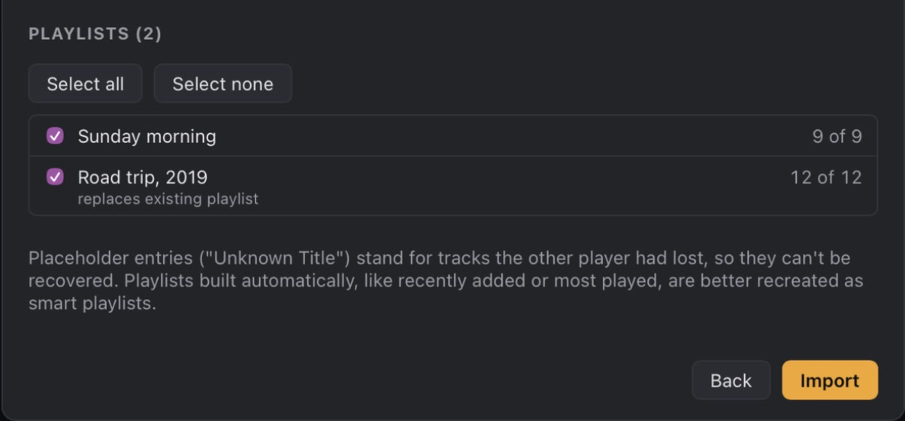

No gap between songs
Kaseki marks where each song ends inside its buffer, so live albums and DJ mixes run straight through.
#TitleTime
2Table for Five4:09
3Green Light3:39
1Off Kanagawa4:38
Honeycomb is a free, native music player for Mac and Windows. It stays quick at 100,000 tracks and brings your ratings and play counts with it.
Get the alphaRules in plain words. Rating is greater than 3.5, last played over a month ago, and Honeycomb keeps the list current as you listen.




A screen recording of Honeycomb 0.1.0 on a Mac: scrolling and searching 100,000 tracks, then picking albums and playing them.
Every change gets timed against the same generated 100,000-track library. These are the numbers for the current build, next to the build before it.
Measured 21 October 2026 on a MacBook Pro with an M1 Pro and 16 GB, release builds, Low Power Mode on. One machine and a generated library, so treat them as a guide, not a promise.
Kaseki marks where each song ends inside its buffer, so live albums and DJ mixes run straight through.

Where your output allows it, Honeycomb opens it at the song’s sample rate. Otherwise it resamples with a sinc filter.
Rate straight from the track list. Smart playlists read the same half stars, so 3.5 means three and a half.
MP3, FLAC, AAC and ALAC, Ogg Vorbis, WAV and AIFF, all gapless, with their tags read and merged.
Headphone buttons, media keys and the macOS Now Playing controls reach Honeycomb from any app.

Honeycomb never moves or deletes your music. It writes to a file only when you press Save in the tag editor.
Honeycomb doesn’t borrow a playback library. Kaseki is its own audio engine, written in Rust, and it does one job: get every sample from the file to your speakers on time, with nothing added and no gap between songs.
2.33% idle CPU, down from 5.86% before Kaseki, measured with a 100,000-track library on an M1 Pro.
How Kaseki worksMost desktop players can save an iTunes-format library XML. Choose it, and any M3U playlists.



I wanted a player that treats a big library as the point, not an edge case: a column browser, proper tags, smart playlists, and play counts that mean something after ten years.
On a Mac, the ones I liked either weren’t native or slowed to a crawl once the library got big. So I started writing my own, in Rust, with its own audio engine.
Every build gets measured against a generated 100,000-track library: startup, search, sorting, scrolling and idle CPU. If a change makes those worse, it doesn’t ship.
Honeycomb is free and open source under the GPL, and it will stay that way. Next come Linux builds, Last.fm scrobbling, and syncing to USB drives and players.
n1ji
Makes Honeycomb
Yes. It’s free and open source under GPL-3.0-or-later. No account, no subscription.
Builds for Mac and Windows. They aren’t signed yet, so the first time you open Honeycomb on a Mac, allow it in System Settings → Privacy & Security → Open Anyway.